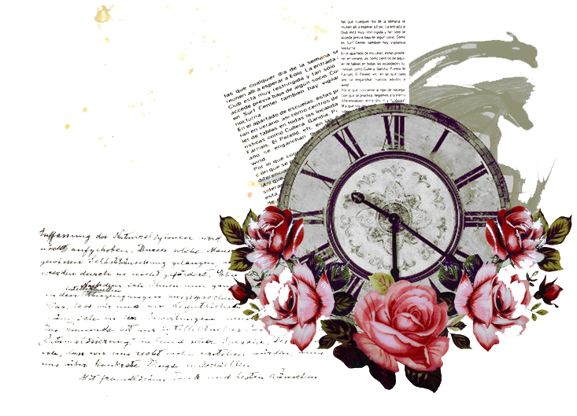

Ultima Memoria
2013 - 2015

Cette histoire est très importante pour moi, car elle constitue mon premier roman. Je l'ai écrite durant mes études de mathématiques, en prépa, pour m'échapper de mon quotidien. J'ai mis le point final à ce projet en 2020, en terminant son auto-publication. Ce romain parle du souvenir et du temps qui passe. Il est très personnel, j'y ai mis beaucoup de moi.
Je suis aussi très heureuse d'avoir pu réaliser moi-même la couverture de ce livre. J'ai tenté de retranscrire son ambiance : douce, dorée, ornée de pétales de rose, tout en gardant le temps comme élément central. La photo a été prise rue Soufflot, un des décors principaux du roman.
Je n'ai jamais voulu faire d'argent avec ce livre, donc je reverserai tous les bénéfices à une association.
Je vous mets le lien pour acheter le romain ici, en espérant qu'il vous plaira ♥
SE PROCURER ULTIMA MEMORIAPrologue
« C'était il y a bien longtemps. Très longtemps. Je ne sais pas même si vous étiez née. Une petite fille a été mise au monde, toute rose, toute ronde, la peau douce. Un bébé tout à fait normal. C'est ce qu'ils pensaient tous. Mais avec les années, les parents se rendirent compte qu'Alice - c'était son nom - avait une faculté spéciale. Quelle faculté ? Vous connaissez bien la légende, non ? Vous en avez entendu parler, n'est-ce pas ? Oui, c'est bien ce que je pensais. Elle était capable de se souvenir de tout. Chaque petit instant, chaque moindre mouvement, Alice le retenait. Elle possédait une mémoire extraordinaire ! Comme personne n'en avait jamais vu auparavant. Aucune mémoire d'homme n'avait entendu parler d'une telle sorte de pouvoir. Oui, car même si ce n'était pas magique, c'était bien un pouvoir. Elle aurait pu rejouer une pièce de théâtre juste après l'avoir vue. Elle aurait pu retenir toutes les fables de La Fontaine. Elle aurait pu vous donner les détails d'une scène dont elle avait été témoin quarante ans auparavant. Mais quarante ans, si seulement elle avait vécu jusque-là ! On raconte qu'elle est morte bien avant. Et c'est ce don, cette faculté inconnue jusqu'à présent, qui l'aurait perdue. - Mais vous, Monsieur, vous devez bien savoir comment elle est morte exactement. Vous connaissez bien les légendes, les histoires qui se transmettent... »
Il la regarda un instant. Ses yeux dévoilaient une pincée de tristesse devant cette question à laquelle il n'avait aucune réponse. Et au grand désespoir de Laetitia, le vieillard secoua la tête. Il ne savait pas.
PS : Beaucoup d'adorables personnes m'ont soutenue lors de l'écriture de ce roman. Un grand merci à Prunellya, Becca et toute l'équipe de Fresh Tomatoes, Clem, Anda, MandT, Liubov, Lily Rose, Light, Chithien, et tous mes lecteurs du début sans qui je n'aurais jamais réussi à terminer Ultima Memoria.